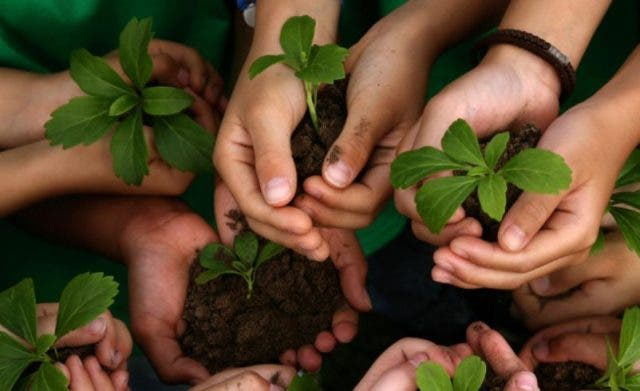

إنشاء مجتمع جديد من خلال التثقيف البيئي
في عام 1977، تم اعتماد إعلان تبليسي بشأن التربية البيئية "لخلق أنماط جديدة من سلوك الأفراد والجماعات والمجتمع ككل تجاه البيئة"، وانطلاقاً من روح الإعلان الذي مضى عليه 45 عامًا تقريبًا، طورت الجامعة الفرنسية الهايتية في كاب هايتيان وهي مؤسسة عضو في برنامج الأمم المتحدة للأثر الأكاديمي UNAI في هايتي مشروعًا للتثقيف البيئي كجزء من مبادرات التوعية والإرشاد المجتمعية التي تدعمها جمعية تنمية الشمال الشرقي والسفارة الفرنسية في بورت أو برنس.
وقد صمم البرنامج لمعلمي المدارس الابتدائية لبناء قدرتهم على تثقيف الطلاب حول الأهمية الحاسمة لحماية البيئة، ويقدم البرنامج حاليًا إلى أكثر من 60 معلمًا في 10 مدارس من خلال ست وحدات تدريبية تغطي مجموعة واسعة من المواضيع، بما في ذلك التأملات المتعلقة بالتثقيف البيئي والعناصر البيئية وأساسيات التنمية المستدامة والنهج التعليمية إزاء التنمية المستدامة وإدارة المشاريع اللامنهجية (الخارجة عن المناهج الدراسية) المتصلة بالبيئة.
ويتعين على كل معلم أن يطبق المحتوى في فصولهم الدراسية، وعليهم أن يشرحوا بالتفصيل كيف يخططون لدمج المعلومات في أنشطة التدريس والتعلم الشاملة بناءً على عمر الطلاب ومستواهم الدراسي والموارد المتاحة لهم، وقد اقترح المعلمون بالفعل مجموعة واسعة من تطبيقات الفصل الدراسي والحلول للتدريس حول البيئة.
سيقوم المعلمون بتنفيذ حملات توعية محلية بعد التدريب وبرامج إعادة تدوير مجتمعية، والابتكار في إدارة النفايات لضمان التخلص السليم من القمامة، وتقنيات إعادة التشجير في المدارس نفسها والمناطق المحيطة بها، وأشارت ردود فعل المشاركين إلى مستوى عالٍ من الرضا عن البرنامج.
في حين أنه قد يتم إهمال المخاوف بشأن الموضوعات البيئية وسط التحديات التي يُنظر إليها على أنها أكثر أهمية، فإن الجامعة الفرنسية الهايتية في كاب هايتيان تماشياً مع رسالتها المتمثلة في تعزيز الكفاءات والمهارات التعليمية لطلابها على حد سواء، قد ذهبت إلى ما هو أبعد من الحرم الجامعي من أجل تحسين مستوى المعرفة والوعي بين الذين يثقفون الأجيال الشابة.
ويتماشى البرنامج الذي طورته هذه الجامعة مع الهدف الرابع من خطة التنمية المستدامة لعام 2030 والهدف 4.7 المتعلق بضمان "اكتساب جميع المتعلمين المعرفة والمهارات اللازمة لتعزيز التنمية المستدامة"، بما في ذلك من خلال التعليم من أجل التنمية المستدامة وأنماط الحياة المستدامة، يمكنكم إلقاء نظرة على دليل اليونسكو هذا حول أنشطة التعليم البيئي للمدارس الابتدائية لتعلم المزيد.
اخيرا توفيق اللة